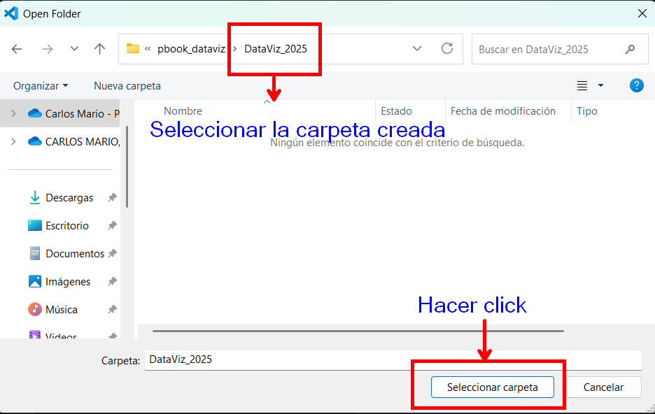

Módulo 1: Introducción a la ciencia de datos con Python#
1.1 Python#
1.1.1 Introducción a Python#
Python fue creado por Guido van Rossum, un programador holandés, a finales de los años 80 y principios de los 90. La primera versión de Python, la 0.9.0, fue lanzada en 1991. Guido van Rossum nombró el lenguaje en honor al grupo de comedia británico Monty Python, del cual era un gran fan.
Python se creó con el objetivo de ser un lenguaje fácil de leer y escribir, con una sintaxis clara y concisa. A lo largo de los años, ha evolucionado y ganado popularidad hasta convertirse en uno de los lenguajes de programación más utilizados en el mundo.
Python es un lenguaje de programación de alto nivel y de gran utilidad para la construcción de cualquier clase de soluciones informáticas.
Algunas características que tiene python:
Legibilidad: Python utiliza una sintaxis clara y sencilla, lo que facilita la lectura y comprensión del código. Utiliza indentación (espacios o tabulaciones) para delimitar bloques de código, lo que promueve un estilo de programación estructurado y legible.
Lenguaje interpretado: Python es un lenguaje interpretado, diferenciándolo de otros lenguajes de programación de alto nivel como Java o C++. Al ser un lenguaje interpretado, no necesita ser compilado para ejecutar las instrucciones escritas. Por lo tanto, su ejecución no implica llevarlo a código de máquina.
Código abierto, multiplataforma y multiparadigma: Python es un lenguaje de programación de código abierto; es decir, puede ser utilizado por cualquier persona gracias a las licencias gratuitas. Además, es multiplataforma, ya que puede ser adaptado para diferentes contextos y sistemas operativos. También, se aplica en muchos paradigmas de programación, tales como programación imperativa y la orientada a objetos. Así mismo, cuenta con una sintaxis y legibilidad que lo hacen muy sencillo y cercano al lenguaje natural.
Tipado dinámico: Python es un lenguaje de tipado dinámico. Esto quiere decir que, cuando se utiliza una variable, no es necesario describir de forma explícita el tipo de datos, ya que la variable se adecúa a la forma en que se utilice durante la escritura del programa. La variable puede tomar distintos tipos de valores durante su ejecución; por ejemplo, la variable var puede tomar cuatro tipos diferentes (
int,str,boolyfloat), como se ve en el ejemplo siguiente:
var_1 = 11; var_2 = 'Ciencia'; var_3 = True; var_4 = 4.57
type(var_1), type(var_2), type(var_3), type(var_4)
Bibliotecas y funciones: Python cuenta con una gran cantidad de bibliotecas y funciones que facilitan el trabajo de programación. Además, existe una gran comunidad que sirve de apoyo a los neófitos de Python y apoyan con información de las herramientas. Entre las bibliotecas, se destacan las utilizadas en la ciencia de datos:
Numpy,Pandas,MatplotlibyScikit-learn.Comunidad activa: Python cuenta con una comunidad de desarrolladores grande y activa que contribuye con bibliotecas,
frameworksy herramientas adicionales. Esto significa que encontrarás una gran cantidad de recursos y soporte disponibles.
Python se utiliza en una amplia gama de aplicaciones y dominios, algunos ejemplos son:
Desarrollo web: Python es ampliamente utilizado en el desarrollo web backend, con frameworks populares como Django y Flask.
Ciencia de datos: Python es el lenguaje preferido para el análisis de datos y la ciencia de datos debido a bibliotecas como
NumPy,Pandas,Matplotlib, entre otras.Inteligencia artificial y machine learning: Python es la elección principal para proyectos de IA y machine learning, gracias a bibliotecas como
TensorFlowyScikit-learn.Automatización de tareas: Python se puede utilizar para automatizar tareas repetitivas, como procesamiento de archivos,
web scrapingy pruebas de software.Desarrollo de juegos: Python se utiliza en el desarrollo de juegos simples, especialmente con bibliotecas como Pygame.
1.2 Entornos de desarrollo (Jupyter Notebook)#
1.2.1 Descarga e instalación de Miniconda, VSCode#
Para comenzar a programar en Python, primero debes descargar e instalar Miniconda en tu computadora. Sigue estos pasos:
1.2.1.1 Miniconda#
Miniconda es una distribución ligera de Anaconda, que es una distribución de Python y R para la computación científica, que incluye más de 250 paquetes científicos preinstalados y es compatible con Windows, macOS y Linux.
Entra a la página de miniconda y escoger su instalador. Esta instalación se hizo para windows. Siga los siguientes pasos:
|
|
|---|---|
|
|


|
|
|---|---|
|


Ahora verifiquemos que se ha instalado correctamente

Ahora, digita en python --version en la consola de Powershell Prompt

1.2.1.2 Descarga e instalación de Visual Studio Code#
Visual Studio Code (VSCode) es un editor de código desarrollado por Microsoft. Con la extensión de Python, se convierte en un IDE ligero y versátil para el desarrollo de Python.
Entra a la pagina de VSCode y descargalo. Y sigue los siguientes pasos para su instalación adecuada:
|
|
|---|---|
|
|


|
|
|---|---|
|


Ahora, agreguemos las extensiones que necesitamos para el desarrollo optimo del curso
|
|
|---|


Para crear un documento en jupyter notebook es importante seguir los siguientes pasos:
 |
|
|
|---|---|

1.2.2 Creación, activación y desactivación de ambiente virtuales#
El proceso para crear, activar y desactivar ambientes se deben ejecutar desde la consola Powershell de Anaconda.
Un ambiente virtual es un entorno aislado que permite instalar y manejar paquetes específicos de Python sin afectar el entorno global de Python o interferir con otros proyectos. Para crear un ambiente virtual, se usa la siguiente sintaxis:
Este entorno debe ser creado con la versión de python 3.9 en adelante de Python, para que no exista conflicto con la ejecución de algoritmos a utilizar.

Para activar el ambiente hacemos:

Para instalar las librerías en el ambiente podemos usar la instrucción conda o pip.
Si prefieres usar conda (recomendado para evitar problemas de compatibilidad), puedes instalar las librerías con los siguientes comandos:

Ya hemos venido trabajando muchas librerias para ciencia de datos, en un archivo .txt tenemos agregados muchas librerias, el cual usaremos en el transcurso del curso. En el siguiente enlace podras encontrar el requirements. Despues de descargarla, debes ubicarla en la carpeta que creaste para el desarrollo del curso, en nuestro caso es CD_Serfinanzas. Recuerda tener activo tu ambiente. Esto se instala de la siguiente manera:
Para poder usar el ambiente que se creó con todas las librerías instaladas, siga los siguientes pasos:


Despues de haber realizado todo este proceso. Tiene en forma adecuada VSCode y así podrá trabajar de manera más óptima.
Si usted desea desactivar cualquier entorno activado utilice la siguiente orden
en la consola Powershell de Anaconda. conda deactivate
1.3 Fundamentos de sintaxis y estructura#
El objetivo de esta sesión NO es de ningún modo aprender a utilizar el Python como una calculadora sino más bien familiarizarce con la manera en que el programa trabaja cada una de las operaciones aritméticas y funciones de uso común, además de operaciones con vectores y matrices.
Espacios en blanco significativos
A diferencia de otros lenguajes, Python utiliza los espacios en blanco (indentaciones) para definir la estructura del código en lugar de llaves o palabras clave específicas.Entorno de desarrollo interactivo con el live code.
Comentarios
Los comentarios en Python se realizan usando el símbolo # para comentarios de una sola línea, y triple comillas dobles “”” para comentarios de múltiples líneas o docstrings, los cuales son especialmente útiles para documentar el propósito de funciones y clases.
# Python fue creado por Guido van Rossum, un programador holandés, en 1991.
1.3.1 Constantes o valores#
Las constantes son elementos que se fijan en un programa y que no permiten cambios; por ejemplo, un número (\(45\) o \(32\)), una letra (a o b), una cadena (‘cuaderno’ o ‘borrador’) o un booleano (True). Como se puede observar, cada una de estas constantes tiene una forma o tipo.
1.3.2 Tipos de datos#
Los tipos de datos básicos más comunes en Python son:
Entero: Se representa con la palabra clave int; por ejemplo, \(45\) o \(38\).
Real o punto flotante: Son los números que contiene un punto decimal entre dos dígitos y se representa con la palabra clave float, por ejemplo \(0.29\), \(26.82\) y \(0.03\).
Complejos: Un número complejo es de la forma \(a+bi\), donde \(a,b\) son números reales y se define con la palabra clave complex Por ejemplo, \(2+3j\).
Cadenas: Están conformados por una secuencia de caracteres encerrados entre comillas simples o dobles. Se representan por la palabra clave str; por ejemplo, “Toma de todo”, “Hola mundo”.
Lógicos y booleanos: Estos tipos de datos solo pueden tomar dos valores,
TrueoFalse, dondeTruetoma valor de \(1\) yFalsetoma el valor de \(0\). Se representan por la palabra clave bool.
type(94), type(95.6), type(2+3j), type('Hola mundo'), type(True)
Variables
Las variables son nombres que hacen referencia a un valor. Este valor puede cambiar a lo largo de la ejecución de un programa. Las variables son espacios de la memoria principal del computador, en donde se almacenan valores de forma temporal o permanente durante la ejecución de un programa.
Operacción de asignación: Para darles el valor a las variables, se realiza la operación de asignación. Esta se hace mediante el signo igual (=), escrito entre el nombre de la variable y el elemento que se le asigna. El elemento asignado puede ser un valor, otra variable previamente definida o una expresión resultante del uso de otras variables, valores u operadores. Algunos ejemplos de asignación son:
a = 3 # asignación del valor
b = 5 # asignación del valor
d = a # asignación del valor
c = a + b # asignación del valor
Tipo de datos de variables: Ya que las variables toman sus valores en la medida en que son definidas a lo largo de la ejecución del programa, su tipo está determinado por el valor que adquieren cuando se realiza la asignación; por ejemplo:
a = 76; b = 3.68; c = 2+3j; d = True; s = 'cadena'
type(a), type(b), type(c), type(d), type(s)
Reglas para el nombre de las variables: Python es sensible a mayúsculas y minúsculas. La variable X y x son diferentes; es decir, si se asigna
X=3yx=4, nunca se reescribe la variable X (en mayúscula) con la segunda asignación. Los nombres de las variables no pueden empezar con caracteres especiales, excepto el guion bajo (_); por ejemplo, _cuenta es válida, pero $cuenta no lo es. Las variables no pueden iniciar con un número, sino con una letra.
1.3.3 Sentencias#
Las sentencias son las mínimas acciones escritas en un programa de Python que el intérprete es capaz de ejecutar. Las asignaciones son consideradas sentencias. Un programa está compuesto de muchas sentencias para lograr su objetivo. En modo interactivo, también se ejecutan las sentencias y se muestra su resultado, siempre y cuando generen alguna salida.
Sentencia de entrada: La sentencia de entrada de datos corresponden a la función
input. Esta sentencia se utiliza para capturar la entrada del usuario desde la consola. Por ejemplo:
# Uso de la función básica input
input()
# Uso de la función input con prompt
x = input("Escriba un número real: ")
Observación: Debemos tener en cuenta que cuando digitamos un número en el input el tipo de dato es de cadena, es decir, string; por lo que si escribes un número debes indicarle si es entero o real. Por ejemplo:
# tipo de dato de x
type(x)
# Conversión de una string numérico entero a un entero
x = int(input('Escribe un número entero '))
type(x)
# Conversión de una string numérico decimal a un número decimal
x = float(input('Escribe un número entero '))
type(x)
Sentencia de salida: La sentencia de salida de datos corresponden a la función
print. Esta sentencia se utiliza para mostrar texto y otros tipos de datos en la consola. Por ejemplo
# Uso del print
print('Python')
# Uso de la función básica print
print('El número ingresado es ', x)
# Uso del print con varias palabras sin separarla
print('Introducción' 'a' 'la' 'ciencia' 'de' 'datos' 'con' 'Python')
# Uso del print con varias palabras con separación
print('Introducción','a','la','ciencia','de','datos','con','Python')
# Uso del print con espacio sin salto de linea
# end = ' ', tiene un espacio
print('Ciencia', end = ' ')
print('de', end = ' ')
print('datos')
# Uso del print con salto de línea
print('Ciencia' '\n' 'de' '\n' 'datos')
# Otra forma de salto de linea
# end = '\n'
print('Ciencia', end = '\n')
print('de', end = '\n')
print('datos')
# Uso de print separado por un caracter
print('Ciencia','de','datos',sep='\\')
1.3.4 Operaciones aritmeticas#
Los operadores aritméticos en Python son fundamentales para realizar cálculos. Se aplican sobre operandos, que pueden ser tanto variables como constantes. La tabla siguiente recoge los operadores más comunes en Python.
Operador |
Descripción |
Ejemplo |
Resultado |
|---|---|---|---|
x + y |
Suma |
4 + 5 |
9 |
x - y |
Resta |
6 - 3 |
3 |
x * y |
Multiplicación |
3 * 4 |
12 |
x / y |
División |
15 / 4 |
3.75 |
x % y |
Módulo |
15 % 4 |
3 |
x // y |
División entera |
25 // 4 |
6 |
x ** y |
Exponenciación |
2 ** 3 |
8 |
# Uso de las operaciones aritmeticas
# Definición de variables
a = 10
b = 3
c = 2
# Combinación de varios operadores aritméticos en una sola línea
resultado = (a + b) * c - (((a / b) ** c )% b )// c
print(f'Resultado: (({a} + {b}) * {c}) - ({a} / {b}) ** {c} % {b} // {c} = {resultado}')
Resultado: ((10 + 3) * 2) - (10 / 3) ** 2 % 3 // 2 = 25.0
Observación: La concatenación de caracteres en Python se realiza utilizando el operador +. Este operador permite unir dos o más cadenas de texto en una sola cadena. Es importante asegurarse de que ambos operandos sean cadenas de texto para evitar errores de tipo. Aquí tienes un ejemplo:
cadena1 = "Hola, "
cadena2 = "¿cómo estás?"
cadena1 + cadena2
1.3.5 Símbolos de asignación aumentada#
Los símbolos de asignación aumentada en Python son una forma conveniente de modificar el valor de una variable utilizando un operador aritmético y la asignación. Estos operadores combinan una operación aritmética con la asignación, simplificando el código.
Aquí están los símbolos de asignación aumentada más comunes en Python:
Operador |
Descripción |
|---|---|
x += y |
x = x + y |
x -= y |
x = x - y |
x *= y |
x = x * y |
x /= y |
x = x / y |
x %= y |
x = x % y |
x **= y |
x = x ** y |
x //= y |
x = x // y |
# uso de la asignación aumentada
# definamos las variables
a=3; b=2
# asignación aumenta
a += 2; b *= 2
# imprimir las nuevas asignaciones
print(f'El valor de a es {a}, el valor de b es {b}')
1.3.6 Operadores de comparación#
Los operadores relacionales sirven para comparar dos expresiones y devuelven un valor booleano, que puede ser True (verdadero) o False (falso). Consulta la tabla siguiente para más detalles sobre estos operadores
Comando |
Significado |
Ejemplo |
Resultado |
|---|---|---|---|
x == y |
x es igual a y |
4 == 5 |
|
x != y |
x no es igual a y |
6 != 3 |
|
x > y |
x es mayor que y |
7 > 4 |
|
x < y |
x es menor que y |
9 < 8 |
|
x >= y |
x es mayor o igual que y |
5 >= 5 |
|
x <= y |
x es menor o igual que y |
2 <= 4 |
|
# Uso de las operaciones de comparación
# Definicion de variables
a = 11; b = 7
print('a > b:', a > b)
print('a <= b:', a <= b)
1.3.7 Operadores lógicos:#
Los operadores lógicos permiten combinar subexpresiones booleanas para obtener un nuevo valor booleano. Los operadores más comunes son and, or y not, y se detallan en la siguiente tabla.
Comando |
Significado |
Ejemplo |
Resultado |
|---|---|---|---|
and |
y |
|
|
or |
o |
|
|
not |
No |
|
|
# Operadores lógicos
print(a > b and b == 5)
print(a < b or a != 12)
1.3.8 Estructuras algorítmicas#
Las estructuras algorítmicas consisten en bloques formados por múltiples sentencias. Estas sentencias pueden ser simples o también pueden contener otras estructuras de bloques. Al escribir estructuras algorítmicas en Python, es crucial tener en cuenta dos aspectos importantes:
Cada vez que se inicia una estructura, el encabezado debe terminar con dos puntos (:).
Cada sentencia dentro de una estructura debe estar indentada en relación con el encabezado.
![Est_Alg.PNG]()
1.3.8.1 Sentencias condicionales#
Las sentencias condicionales son estructuras de programación que permiten ejecutar cierto bloque de código si se cumple una condición especificada. En las sentencias condicionales, siempre habrá una condición después de la palabra clave.
Sentencia if-else simple: Las sentencias if-else en programación permiten tomar decisiones dentro de un algoritmo. La estructura básica es la siguiente:
if condición:
bloque de código a ejecutar si la condición es verdadera
else:
bloque de código a ejecutar si la condición es falsa
El flujo de control funciona así: primero, se evalúa la condición. Si la condición es verdadera (True), se ejecuta el bloque de código dentro del if. Si la condición es falsa (False), se ejecuta el bloque de código dentro del else. Por ejemplo:
# Definición de la variable
edad = 25
# sentencia if-else
if edad >= 18:
print("Eres mayor de edad")
else:
print("Eres menor de edad")
Sentencia if-else anidada: Las sentencias if-else anidadas permiten manejar múltiples condiciones en un algoritmo, ejecutando diferentes bloques de código según diversas situaciones. La estructura básica de una sentencia
if-elseanidada es la siguiente:
if condición1:
bloque de código a ejecutar si condición1 es verdadera
if condición1_1:
bloque de código a ejecutar si condición1_1 es verdadera
else:
bloque de código a ejecutar si condición1_1 es falsa
else:
if condición2:
bloque de código a ejecutar si condición2 es verdadera
else:
bloque de código a ejecutar si condición2 es falsa
Cada if o else dentro de otro if o else se denomina anidado. Esta estructura permite evaluar múltiples condiciones de manera secuencial. Por ejemplo
# definición de la variable
nota = float(input('Escriba la nota que obtuvo en el examen '))
# sentencia if-else anidada
if nota >= 90:
print("Excelente")
else:
if nota >= 80:
print("Muy bien")
else:
if nota >= 70:
print("Bien")
else:
print("Necesita mejorar")
Sentencia if-elif anidada
La sentencia if-elif en programación es una forma abreviada de manejar múltiples condiciones consecutivas sin necesidad de anidar múltiples else-if. La palabra clave elif (abreviatura de else if) permite evaluar una nueva condición si la condición anterior es falsa, simplificando la estructura del código y mejorando su legibilidad. La estructura básica de una sentencia if-elif es la siguiente:
if condición1:
bloque de código a ejecutar si condición1 es verdadera
elif condición2:
bloque de código a ejecutar si condición2 es verdadera
elif condición3:
bloque de código a ejecutar si condición3 es verdadera
else:
bloque de código a ejecutar si ninguna de las condiciones anteriores es verdadera
Cada elif es evaluado solo si las condiciones anteriores son falsas. Si una condición elif es verdadera, su bloque de código correspondiente se ejecuta y las demás condiciones no se evalúan. Por ejemplo
# definición de la variable
nota = float(input('Escriba la nota que obtuvo en el examen '))
# sentencia elif anidada
if nota >= 90:
print("Excelente")
elif nota >= 80:
print("Muy bien")
elif nota >= 70:
print("Bien")
else:
print("Necesita mejorar")
1.3.8.2 Sentencias repetitivas#
Las sentencias repetitivas, también conocidas como bucles o ciclos, son estructuras de programación que permiten ejecutar repetidamente un bloque de código mientras se cumple una condición específica o durante un número determinado de iteraciones. Estas sentencias son esenciales para automatizar tareas repetitivas y para procesar secuencias de datos de manera eficiente. Los tipos más comunes de sentencias repetitivas incluyen:
Bucle For: El bucle
fores una estructura de control de flujo que permite iterar sobre una secuencia de elementos (como una lista, tupla, cadena, conjunto o rango) y ejecutar un bloque de código para cada elemento de la secuencia. Este tipo de bucle es muy útil cuando se sabe de antemano cuántas veces se debe repetir el bloque de código, o cuando se quiere realizar una operación en cada elemento de una colección. La estructura básica de un bucle for en Python es:
for elemento in secuencia:
bloque de código a ejecutar para cada elemento
Aquí, elemento es una variable que toma el valor de cada elemento en la secuencia durante cada iteración del bucle. El bloque de código dentro del bucle se ejecuta una vez por cada elemento en la secuencia. Por ejemplo
# Definicion de variable
palabra = "hola"
# Iterar sobre una cadena
for letra in palabra:
print(letra)
# Iterar sobre un rango de números
for i in range(5):
print(i)
# Definicion de variable
frutas = ["manzana", "banana", "cereza"]
# Iterar sobre una lista
for fruta in frutas:
print(fruta)
Dentro de un bucle for, se pueden usar las declaraciones break y continue para controlar el flujo del bucle:
break: Termina el bucle prematuramente, es decir, sale del bucle cuando se cumple una condición específica.
continue: Salta a la siguiente iteración del bucle, omitiendo el resto del bloque de código para la iteración actual.
# definición de variables
numeros = [1, 2, 3, 4, 5]
# uso del break
for numero in numeros:
if numero == 3:
break # Sale del bucle cuando numero es 3
print(numero)
# uso del continue
for numero in numeros:
if numero % 2 == 0:
continue # Salta a la siguiente iteración cuando numero es par
print(numero)
Bucle While: El bucle while son estructuras de control de flujo que permiten ejecutar repetidamente un bloque de código mientras se cumpla una condición específica. La estructura básica de un bucle while es la siguiente:
while condición:
bloque de código a ejecutar mientras la condición sea verdadera
El flujo de control funciona de la siguiente manera: primero, se evalúa la condición. Si la condición es verdadera (True), se ejecuta el bloque de código dentro del while. Después de ejecutar el bloque de código, se vuelve a evaluar la condición. Este proceso se repite hasta que la condición se vuelve falsa (False). Por ejemplo en Python:
# definición de variable
i = 0
# iteración con el bucle while
while i < 5:
print(i)
i += 1
Tambíen, dentro de un bucle while, se pueden usar las declaraciones break y continue para controlar el flujo del bucle. Por ejemplo
# definición de variable
i = 0
# uso del break
while i < 10:
if i == 5:
break # Sale del bucle cuando i es 5
print(i)
i += 1
i = 0
# uso del continue
while i < 10:
i += 1
if i % 2 == 0:
continue # Salta a la siguiente iteración cuando i es par
print(i)
1.3.9 Funciones en python#
Las funciones en Python son bloques de código diseñados para realizar tareas específicas y se pueden reutilizar en diferentes partes del programa. Definir y usar funciones te permite organizar tu código de manera más efectiva y reducir la redundancia.
Definición de una función: Una función se define utilizando la palabra clave
def, seguida del nombre de la función y un paréntesis que puede contener parámetros. Dentro del bloque de código de la función, se especifican las instrucciones que se ejecutarán cuando se llame a la función.
def nombre_de_la_funcion(nombre):
"""Esta función recibe un nombre (input) y muestra un saludo (output)."""
cuerpo
return respuesta
Por ejemplo
def saludar(nombre):
"""Esta función recibe un nombre (input) y muestra un saludo (output)."""
saludo = f"Hola, {nombre}!"
return saludo
Observación: Las variables creadas dentro de una función son variables locales (son válidas dentro de la función donde se usan).
Llamada a la función: Para ejecutar el código dentro de una función, se llama a la función por su nombre y se pasan los argumentos necesarios, si los hay.
mensaje = saludar("Ana")
print(mensaje) # Salida: Hola, Ana!
Funciones con parámetros por defecto: Las funciones pueden tener parámetros con valores predeterminados. Si el usuario no proporciona un argumento para ese parámetro, se utilizará el valor predeterminado.
def saludar(nombre="Invitado"):
"""Esta función recibe un nombre y muestra un saludo.
Si no se proporciona un nombre, usa 'Invitado'."""
saludo = f"Hola, {nombre}!"
return saludo
# Llamada a la función sin argumentos
mensaje1 = saludar()
print(mensaje1) # Output: Hola, Invitado!
# Llamada a la función con un argumento
mensaje2 = saludar("Carlos")
print(mensaje2) # Output: Hola, Carlos!
Funciones con múltiples parámetros: Una función puede aceptar múltiples parámetros y realizar operaciones con ellos.
def suma(a, b):
"""Esta función suma dos números y devuelve el resultado."""
resultado = a + b
return resultado
# Llamada a la función
resultado_suma = suma(10, 5)
print(resultado_suma) # Output: 15000
Funciones Anónimas (Lambdas): En Python, las funciones pequeñas y sin nombre se pueden crear usando la palabra clave
lambda. Estas funciones son útiles para operaciones simples.
# Definición de una función lambda
suma = lambda x, y: x + y
# Llamada a la función lambda
resultado = suma(3, 7)
print(resultado) # Output: 10
Funciones Recursivas: Una función recursiva es aquella que se llama a sí misma para resolver un problema. Es importante definir una condición de parada para evitar una recursión infinita.
def factorial(n):
"""Esta función calcula el factorial de un número de manera recursiva."""
if n == 0:
return 1
else:
return n * factorial(n - 1)
# Llamada a la función
resultado_factorial = factorial(5)
print(resultado_factorial) # Output: 120
Funciones Internas: Python incluye una serie de funciones integradas que facilitan tareas comunes. Estas funciones están disponibles por defecto y no requieren importación adicional. Algunas de estas funciones internas son
len(),max(),min(), etc., se llaman directamente con su nombre y los argumentos necesarios entre paréntesis. Estas funciones están disponibles globalmente en Python y no pertenecen a un objeto específico. Aquí puedes encontrar más funciones internas de python. Aquí tienes un enlace a la documentación oficial de Python sobre funciones integradas built-in functions.
1.4 Uso de estructuras de datos básicas (vectores, listas, matrices, diccionarios)#
1.4.1 Vectores#
Un vector es una secuencia ordenada de elementos, que pueden ser números, caracteres o cualquier otro tipo de dato. En Python, los vectores se pueden implementar utilizando listas.
Las características de un vector son:
Ordenados: Los elementos tienen un orden definido.
Indexados: Cada elemento tiene una posición (índice) en el vector
Algunas operaciones comunes:
Acceso a elementos por índice:
# Crear un vector
vector = [10, 20, 30, 40, 50]
# Acceder al primer elemento (índice 0)
print(vector[0]) # Output: 10
# Acceder al tercer elemento (índice 2)
print(vector[2]) # Output: 30
Modificación de elementos:
# Crear un vector
vector = [10, 20, 30, 40, 50]
# Modificar el segundo elemento (índice 1)
vector[1] = 25
print(vector) # Output: [10, 25, 30, 40, 50]
Suma, resta, multiplicación y división de vectores: En programación científica, estas operaciones a menudo se realizan utilizando bibliotecas como
NumPypara una mayor eficiencia y facilidad. Por ejemplo:
# importar biblioteca
import numpy as np
# Crear dos vectores (arrays de NumPy)
vector1 = np.array([1, 2, 3])
vector2 = np.array([4, 5, 6])
# Suma de vectores
suma = vector1 + vector2
print("Suma:", suma) # Output: [5 7 9]
# Resta de vectores
resta = vector1 - vector2
print("Resta:", resta) # Output: [-3 -3 -3]
# Multiplicación de vectores
multiplicacion = vector1 * vector2
print("Multiplicación:", multiplicacion) # Output: [ 4 10 18]
# División de vectores
division = vector1 / vector2
print("División:", division) # Output: [0.25 0.4 0.5 ]
Agregar elementos a un vector:
# Crear un vector
vector = [10, 20, 30]
# Agregar un nuevo elemento al final del vector
vector.append(40)
print(vector) # Output: [10, 20, 30, 40]
1.4.2 Listas#
Las listas en Python son estructuras de datos que pueden almacenar una colección ordenada de elementos, los cuales pueden ser de diferentes tipos. Las listas son dinámicas, lo que significa que pueden crecer o reducirse según sea necesario.
Las características de una lista son:
Mutables: Los elementos pueden ser modificados después de la creación de la lista.
Heterogéneas: Pueden contener diferentes tipos de datos.
Anidadas: Pueden contener otras listas como elementos.
Algunas operaciones comunes son:
Añadir elementos:
# crear lista
lista = [1, 2, 3]
# append(): Añade un solo elemento al final de la lista
lista.append(4)
print(lista) # Output: [1, 2, 3, 4]
# extend(): Añade múltiples elementos al final de la lista
lista.extend([4, 5, 6])
print(lista) # Output: [1, 2, 3, 4, 5, 6]
Eliminar elementos:
# crear lista
lista = [1, 2, 3, 4]
# remove(): Elimina la primera aparición de un valor en la lista.
lista.remove(2)
print(lista) # Output: [1, 3, 4]
# pop(): Elimina y devuelve el elemento en el índice especificado (por defecto, el último)
elemento = lista.pop()
print(elemento) # Output: 4
print(lista) # Output: [1, 2, 3]
elemento = lista.pop(1)
print(elemento) # Output: 2
print(lista) # Output: [1, 3]
Ordenar elementos:
# crear lista
lista = [4, 2, 3, 1]
# sort(): Ordena los elementos de la lista en su lugar.
lista.sort()
print(lista) # Output: [1, 2, 3, 4]
# sorted(): Devuelve una nueva lista ordenada sin modificar la original.
lista_ordenada = sorted(lista)
print(lista_ordenada) # Output: [1, 2, 3, 4]
Acceder a elementos por índice:
# crear lista
lista = ['a', 'b', 'c', 'd']
print(lista[0])
Modificar elementos:
# crear lista
lista = [10, 20, 30, 40]
lista[1] = 25
print(lista) # Output: [10, 25, 30, 40]
1.4.3 Matrices#
Las matrices son arreglos rectangulares de elementos, es decir,
donde \(m\) es el número de filas y \(n\) es el número de columnas
En Python, las matrices pueden ser implementadas usando listas de listas o utilizando bibliotecas como NumPy, que proporciona una funcionalidad más eficiente para el manejo de matrices.
Las matrices poseen varias características que las hacen útiles para muchas aplicaciones, especialmente en matemáticas, ciencia de datos, y programación científica:
Dimensionalidad: Las matrices son bidimensionales, organizadas en filas y columnas. Además, se pueden extender a más dimensiones, formando tensores en contextos más avanzados.
Homogeneidad: Los elementos de una matriz deben ser del mismo tipo (e.g., todos enteros, todos flotantes).
Indexación: Los elementos de una matriz se acceden utilizando un par de índices: uno para la fila y otro para la columna.
Mutabilidad: Las matrices pueden ser modificadas después de su creación, permitiendo la actualización de elementos individuales o la reasignación de filas y columnas completas.
Operaciones Matemáticas: Las matrices admiten una variedad de operaciones matemáticas, tales como suma, resta, multiplicación (tanto elemento a elemento como producto matricial), y transposición. Estas operaciones son esenciales para cálculos algebraicos lineales y análisis numérico.
Transposición: La transposición de una matriz implica intercambiar sus filas por columnas, y es una operación comúnmente utilizada en diversas aplicaciones matemáticas y científicas.
Determinante y Rango: Para matrices cuadradas (mismo número de filas y columnas), se pueden calcular propiedades como el determinante y el rango, que tienen importantes aplicaciones en álgebra lineal.
import numpy as np
# Creacion de matriz
matriz = np.array([
[1, 2, 3],
[4, 5, 6],
[7, 8, 9]
])
matriz
Acceso a elementos por filas y columnas:
# Acceder al elemento en la primera fila, segunda columna
matriz[0][1]
# Acceder al elemento en la tercera fila, primera columna
matriz[2][0]
# Acceder a la segunda columna
matriz[:, 1]
# Acceder a la segunda fila
fila = matriz[1]
Realizacemos algunas operaciones con matrices
# Crear dos matrices
matriz1 = np.array([
[1, 2, 3],
[4, 5, 6],
[7, 8, 9]
])
matriz2 = np.array([
[9, 8, 7],
[6, 5, 4],
[3, 2, 1]
])
# Suma de matrices (deben tener las mismas dimensiones)
suma = matriz1 + matriz2
print("Suma:\n", suma)
# Resta de matrices (deben tener las mismas dimensiones)
resta = matriz1 - matriz2
print("Resta:\n", resta)
# Multiplicación de elmento a elemento de matrices (deben tener las mismas dimensiones)
multiplicacion = matriz1 * matriz2
print("Multiplicación elemento por elemento:\n", multiplicacion)
# Multiplicación de matrices (producto matricial)
# El número de columnas de la matriz izquierda debe ser igual
# al número de filas de la matriz derecha
producto_matricial = np.dot(matriz1, matriz2)
print("Producto matricial:\n", producto_matricial)
# Transponer la matriz
transpuesta = matriz.T
print("Transposición:\n", transpuesta)
# Crear una matriz identidad de 3x3
identidad = np.eye(3)
print("Matriz identidad:\n", identidad)
# Calcular el determinante
np.linalg.det(matriz1)
1.4.4 Diccionarios#
Los diccionarios son una estructura de datos que almacena pares de clave-valor. Cada clave es única y se utiliza para acceder a su valor asociado. Los diccionarios son útiles cuando se necesita un mapeo entre elementos, como por ejemplo, asociar nombres con números de teléfono.
Las características de los diccionarios son:
Clave-Valor: Cada elemento en un diccionario es un par clave-valor. Las claves deben ser únicas y de un tipo de datos inmutable (como cadenas, números o tuplas), mientras que los valores pueden ser de cualquier tipo de datos, incluso listas o otros diccionarios.
Acceso Rápido: Los diccionarios permiten un acceso rápido a los valores mediante sus claves, lo que los hace muy eficientes para búsquedas y actualizaciones.
No Ordenado: A partir de Python 3.7, mantienen el orden de inserción, pero esto no es algo en lo que debas confiar en versiones anteriores.
Mutable: Los diccionarios pueden ser modificados después de su creación, permitiendo agregar, eliminar o cambiar pares clave-valor.
Flexible: Los valores en un diccionario pueden ser de cualquier tipo de datos, y los diccionarios pueden incluso anidarse dentro de otros diccionarios.:
Algunos ejemplos de diccionarios:
Creación de un diccionarios:
# Crear un diccionario vacío
mi_diccionario = {}
# Crear un diccionario con algunos pares clave-valor
estudiante = {
"nombre": "Juan",
"edad": 21,
"carrera": "Ingeniería"
}
print(estudiante)
Acceso a un valor:
# Acceder al valor asociado con la clave "nombre"
nombre = estudiante["nombre"]
print(nombre)
Modificar un valor:
# Cambiar el valor asociado con la clave "edad"
estudiante["edad"] = 22
print(estudiante)
Agregar un nuevo par clave-valor:
# Agregar una nueva clave "promedio" con su valor
estudiante["promedio"] = 4.5
print(estudiante)
Eliminar un par clave-valor:
# Eliminar la clave "carrera" y su valor asociado
del estudiante["carrera"]
print(estudiante)
Recorrer un diccionario:
# Recorrer las claves y valores de un diccionario
for clave, valor in estudiante.items():
print(f"{clave}: {valor}")
Comprobar si una clave existe:
if "nombre" in estudiante:
print("El nombre del estudiante es:", estudiante["nombre"])
Diccionarios anidados:
# Crear un diccionario anidado
clases = {
"Matemáticas": {
"Profesor": "Sr. Pérez",
"Horario": "8:00 - 10:00"
},
"Historia": {
"Profesor": "Sra. García",
"Horario": "10:00 - 12:00"
}
}
# Acceder a datos en un diccionario anidado
print(clases["Matemáticas"]["Profesor"])
Los diccionarios son una estructura fundamental en Python, especialmente útil para organizar y acceder a datos de manera eficiente.
1.5 Introducción a la manipulación de datos: Creación, manipulación y análisis de datos tabulares#
La manipulación de datos es una habilidad fundamental en el análisis de datos. Los datos tabulares se organizan en un formato de filas y columnas, similar a una hoja de cálculo, lo que permite un acceso ordenado y eficiente a la información. Este formato es especialmente útil para realizar análisis estadísticos, crear visualizaciones, y construir modelos predictivos.
Los datos tabulares se refieren a la disposición de la información en una tabla, donde:
Filas: Cada fila (o registro) representa una observación individual o una instancia de un conjunto de datos. Por ejemplo, en un conjunto de datos sobre clientes, cada fila podría representar a un cliente único, incluyendo toda la información relevante de ese cliente.
Columnas: Cada columna (o variable) contiene una característica específica de las observaciones. Siguiendo el ejemplo anterior, las columnas podrían incluir variables como el nombre del cliente, la edad, la ciudad de residencia, o el monto de compra. Las columnas son homogéneas, es decir, todas las entradas en una columna deben ser del mismo tipo de datos (números, texto, fechas, etc.).
Este formato tabular facilita operaciones como la búsqueda de valores específicos, el filtrado de datos basados en condiciones, la agregación de resultados, y la combinación de diferentes conjuntos de datos.
Pandas es una herramienta de manipulación de datos de alto nivel desarrollada por Wes McKinney. En su inicio es construido sobre Numpy y ahora compatible con Arrow y permite el análisis de datos que cuenta con las estructuras de datos que necesitamos para limpiar los datos en bruto y que sean aptos para el análisis (por ejemplo, tablas). Como Pandas permite realizar tareas importantes, como alinear datos para su comparación, fusionar conjuntos de datos, gestión de datos perdidos, etc., se ha convertido en una librería muy importante para procesar datos a alto nivel en Python (es decir, estadísticas ). Pandas fue diseñada originalmente para gestionar datos financieros, y como alternativo al uso de hojas de cálculo (es decir, Microsoft Excel). Las dos principales estructuras de datos que ofrece Pandas son:
Series: Una
Serieses un arreglo unidimensional similar a un array deNumpyo a una lista en Python, pero con etiquetas de eje (llamadas índices). Es ideal para trabajar con datos univariados.DataFrame: Un
DataFramees una estructura de datos bidimensional, como una tabla en una hoja de cálculo, que permite el almacenamiento y manipulación de datos tabulares. Es la estructura de datos más utilizada en Pandas y soporta operaciones de filtrado, agregación, pivote, fusión, y mucho más.
Pandas proporciona herramientas que permiten:
leer y escribir datos en diferentes formatos: CSV, JSON, Excel, bases SQL, parquet y HDF5 entre otros.
seleccionar y filtrar de manera sencilla tablas de datos en función de posición, valor o etiquetas.
fusionar y unir datos
transformar datos aplicando funciones tanto en global como por ventanas
manipulación de series temporales
hacer gráficas
Pandas es extremadamente poderoso debido a su capacidad para manejar grandes volúmenes de datos, realizar cálculos complejos y trabajar con diferentes tipos de datos, todo de manera eficiente.
En este link podrás encontrar todas las funciones que necesitas para trabajar ETL de los datos usando Pandas.
1.5.1 Creación de datos tabulares#
Los datos tabulares pueden ser creados de varias maneras dependiendo de la fuente de datos y el propósito del análisis. Aquí exploramos la creación manual:
Creamos primero una lista de listas o diccionario:
# Crear un diccionario
data={
"Nombre":["María","Ana", "Pedro", "Juan", "Carlos", "Sara"], # Lista de nombres se plantea con corchetes
"Edad":[21,22,19,26,22,19], # Lista de edades se plantea con corchetes
"Género":["F","F","M","M","M","F"] # Lista de género se plantea con corchetes
}
# Imprimir data
print(data)
Importemos el módulo pandas:
# Libreria
import pandas as pd
Convertimos el diccionario en un DataFrame:
# DataFrame es una función que está dentro del módulo pandas
df=pd.DataFrame(data)
df
1.5.2 Manipulación de datos#
Una vez que los datos tabulares están disponibles en un DataFrame, Pandas ofrece una variedad de herramientas para manipularlos de forma efectiva. Esto incluye la capacidad de:
Seleccionar y Filtrar: Acceder a subconjuntos de los datos basados en condiciones específicas.
Ordenar: Organizar los datos en función de los valores de una o más columnas.
Agregar y Transformar: Crear nuevas columnas, modificar las existentes o realizar operaciones matemáticas en los datos.
Combinar: Fusionar, concatenar y unir diferentes DataFrames para enriquecer los datos.
Estas son algunas propiedades generales:
El método
df.info()en Pandas es una herramienta útil para obtener un resumen conciso de la estructura de un DataFrame. Este método proporciona información clave sobre el DataFrame, incluyendo el número de filas y columnas, el nombre de cada columna, el número de valores no nulos en cada columna, el tipo de datos de cada columna y la cantidad de memoria utilizada por el DataFrame.
# Obtener información sobre la estructura del DataFrame
df.info()
Observación:
object: significa que la variable es categórica o cualitativa
int64: significa que la variable es numérica o cuantitativa (números enteros). El número es el tamaño en bits que ocupa de memoria.
float64: significa que la variable es numérica o cuantitativa (números decimales). El número es el tamaño en bits que ocupa de memoria.
El atributo df.shape en Pandas es una propiedad que proporciona las dimensiones del DataFrame df. Específicamente, devuelve una tupla que indica el número de filas y columnas que contiene el DataFrame.
# Obtener las dimensiones del DataFrame
df.shape
El método
df.head()en Pandas se utiliza para ver las primeras filas de un DataFrame. Por defecto,head()muestra las primeras 5 filas, pero puedes especificar cuántas filas deseas ver pasando un número como argumento.
# Mostrar las 5 primeras filas del DataFrame
df.head()
# Mostrar las 2 primeras filas del DataFrame
df.head(n=2)
El método
df.tail()en Pandas se utiliza para ver las últimas filas de un DataFrame. Por defecto,tail()muestra las últimas 5 filas, pero también puedes especificar cuántas filas deseas ver pasando un número como argumento.
# Mostrar las 5 ultimas filas de DataFrame
df.tail()
# Mostrar las 3 ultimas filas de DataFrame
df.tail(n=3)
El atributo
df.columnsen Pandas se utiliza para acceder a los nombres de las columnas de un DataFrame. Este atributo devuelve un objeto de tipo Index que contiene los nombres de todas las columnas del DataFrame.
df.columns
Observación:
Puedes utilizar df.columns para acceder o modificar los nombres de las columnas. Por ejemplo, si quieres cambiar el nombre de una columna, puedes hacerlo asignando un nuevo valor a df.columns.
# Renombrar las columnas del DataFrame
df.columns = ['Nombre_Cliente', 'Edad_Cliente', 'Genero_Cliente']
El atributo df.index en Pandas se utiliza para acceder al índice (o las etiquetas de las filas) de un DataFrame. Este índice es una estructura que identifica cada fila de manera única, y puede ser numérico, alfanumérico, o incluso basado en fechas, dependiendo de cómo se construyó el DataFrame
# Obtener el índice del DataFrame
df.index
Observación:
Puedes utilizar df.index para acceder o modificar los nombres de las filas. Por ejemplo, si quieres cambiar el nombre de una columna, puedes hacerlo asignando un nuevo valor a df.index
df.index=["a","b","c","d","e","f"]
df
El método
df.sort_values()en Pandas se utiliza para ordenar un DataFrame en función de los valores de una o más columnas. Por ejemplo:
# Ordenar el DataFrame df por la columna 'Edad' en orden descendente
df.sort_values('Edad', ascending=False, inplace=True)
Observación:
Algunos de los parámetros del ejemplo anterior de la función sort_values son:
Edad: Especifica la columna en función de la cual deseas ordenar los datos. En este caso, se está ordenando por la columnaEdad.ascending=False: Indica que la ordenación debe hacerse en orden descendente. Si quisieras ordenar en orden ascendente, usaríasascending=True(que es el valor por defecto).inplace=True: Al establecerinplace=True, el DataFrame original df se modifica directamente y se ordena. Si se omitiera o se estableciera como False, el método devolvería un nuevo DataFrame ordenado, dejando el DataFrame original sin cambios.
El atributo df.iloc en Pandas se utiliza para acceder a un DataFrame mediante índices enteros (basados en la posición). Este método es útil cuando necesitas seleccionar filas y columnas de un DataFrame basándote en su posición, en lugar de los nombres de las etiquetas. Por ejemplo:
# Seleccionar la primera fila (índice 0)
df.iloc[0]
# Seleccionar las primeras tres filas
df.iloc[0:3]
# Seleccionar el valor en la primera fila y segunda columna
df.iloc[0, 1]
# Seleccionar las primeras dos filas y las primeras tres columnas
df.iloc[0:2, 0:3]
# Seleccionar todos los valores de la segunda columna
df.iloc[:, 1]
# Seleccionar las últimas dos filas de todas las columnas
df.iloc[-2:]
# Seleccionar las columnas por su nombre
df["Nombre"]
# Otra forma de seleccionar las columnas por su nombre
df.Nombre
# Seleccionar el valor en la primera fila como un DataFrame
df.iloc[[0],:]
# Seleccionar las filas 1 y 3 como un DataFrame
df.iloc[[0,2],:]
# Seleccionar las columnas 1 y 3 como un DataFrame
df.iloc[:,[0,2]]
Este método es clave para acceder y manipular datos en un DataFrame utilizando posiciones, especialmente cuando los índices o nombres de columnas no son intuitivos o cuando estás realizando operaciones sobre DataFrames grandes y complejos.
El método
df.locen Pandas se utiliza para acceder a un DataFrame por etiquetas de filas y columnas, a diferencia deiloc, que usa posiciones numéricas.locpermite una variedad de operaciones para seleccionar y filtrar datos basados en las etiquetas de los índices y columnas. Por ejemplo:
# Seleccionar la fila con la etiqueta 'b'
df.loc['b']
# Seleccionar las filas con etiquetas de 'a' a 'c' (inclusive)
df.loc['a':'c']
# Seleccionar el valor en la fila con etiqueta 'b' y columna 'Edad'
df.loc['b', 'Edad']
# Seleccionar las filas 'a' a 'c' y las columnas 'Nombre' y 'Edad'
df.loc['a':'c', ['Nombre', 'Edad']]
# Seleccionar todas las filas y solo la columna 'Ciudad'
df.loc[:,'Género']
# Seleccionar todas las filas donde 'Edad' es mayor que 25
df.loc[df['Edad'] > 25]
Ejercicio#
Se recolectaron datos de 8 estudiantes universitarios y se resumieron en la siguiente tabla:
MASA |
ESTATURA |
GENERO |
ESTRATO |
FUMA |
|---|---|---|---|---|
71 |
183 |
HOMBRE |
2 |
NO |
45 |
168 |
HOMBRE |
1 |
NO |
50 |
164 |
HOMBRE |
1 |
NO |
60 |
164 |
MUJER |
3 |
SI |
61 |
167 |
HOMBRE |
3 |
SI |
84 |
182 |
HOMBRE |
3 |
NO |
55 |
168 |
MUJER |
3 |
NO |
60 |
170 |
HOMBRE |
3 |
SI |
Crear un data frame y llamarlo df.
Realizar un análisis descriptivo básico de todas las variables.
Extraer un subconjunto de datos con los primeros 4 estudiantes y llamarlo subc1.
Extraer las variables categóricas y guardarlas en un subconjunto llamado subc2
Extraer las variables numéricas y guardarlas en un subconjunto llamado subc3